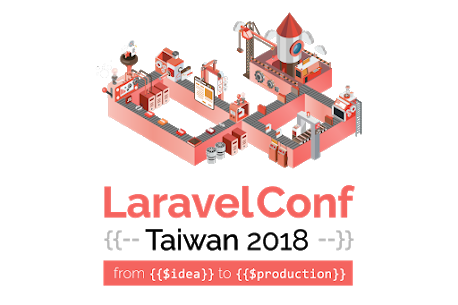

Hello World
CodeTengu Weekly 碼天狗週刊
如果命運的齒輪沒有出差錯，CodeTengu Weekly 都會在 UTC+8 時區的每個禮拜一 AM 10:00 出刊。每週會由三位 curator 負責當期的內容，每個 curator 有各自擅長的領域，如果你在這一期沒有看到感興趣的東西，可能下一期就有了。當然你也可以瀏覽一下前幾期的內容。
目前的 curator 陣容：
- @vinta - I failed the Turing Test - 科幻迷，最近在玩命運石之門 0
- @saiday - Imnotyourson - 電量給我這種人用就是一種浪費
- @tzangms - Oceanic / 人生海海 - 最近真的都在玩薩爾達
- @fukuball - ImFukuball - 有新工作了，但歡迎直接挖角
- @mingderwang - Ethereum enthusiast
- @kako0507 - 熱愛嘗試新事物的前端工程師
- @chiahsien - 》〉》我們要找 iOS 工程師《〈《
- @uranusjr - Smaller Things - 聽說 Pinkoi 少了個棒球記者所以現在去應徵前端應該有機會！？Shadowverse:
uranusjr - @kkdai - 態度萬歲 - Learning Deeply....
- @yhsiang - AMIS / MAICOIN 徵才中，歡迎聯繫！
- @johnlinvc - 挑戰自動化家中電器
- @drumrick - 歡迎加入台灣 Kaggle 交流區
- @wancw
- @allanlei
- @theJian
你也可以關注我們的 Facebook、Twitter、GitHub 或 Open Source 專案，有很多 weekly 看不到的內容。有任何建議也歡迎來 Gitter 聊聊。
 @fukuball
@fukuball
Hello TensorFlow
Machine Learning：初級
TensorFlow.js 最近終於正式 release 了，在這個到處都是 JavaScript 的時代真是個好消息，想像一下有 TensorFlow.js 的未來，要在前端視覺化 Machine Learning model 或是做一些教學文件就變得更方便了，如果掛上 React Native，也可以很容易地在使用者的 app 上訓練一個與 server 完全分離的 Machine Learning model，多了很多應用的可能性，大家有空真的可以玩玩看～
Fashion-MNIST with tf.Keras
Machine Learning：中級
大家接觸 Machine Learning 應該都會練習過 MNIST 這個經典的手寫數字分類問題，Fashion-MNIST 則是一個衣著類型的分類 dataset，本篇文章展示了如何使用 Fashion-MNIST 來訓練一個衣著類型的預測模型，好的 dataset 值得分享啊！
To Build Truly Intelligent Machines, Teach Them Cause and Effect
Machine Learning：中級
本篇文章是關於圖靈獎得主 Judea Pearl 對於人工智慧的一些反思，如果懶得看英文也可以看看中文相關文章，其實目前的 Deep Learning 大爆發都是關於特徵之間的關聯性的曲線擬和，需要大量的資料來確認關聯性，但人類其實可以在很少量的資料下就能達到學習效果，這是目前的演算法還無法達到的，離我們想像中的 AI 非常遠，這也是為何我們會稱這些機器學習方法是「弱」人工智慧。
Judea Pearl 和大部分的人工智慧專家一樣醉心於科幻世界的「強」人工智慧，AI 能夠在環境中自我學習，他主張因果關係的相關方法才是正途，雖然我是不清楚啦，但大家可以看看想想，以目前的所有 Machine Learning 技術到底如何才有辦法在更接近我們想像中的強人工智慧。
TF-rex: Playing Google's T-rex game with TensorFlow
使用強化學習方法（Reinforcement Learning）來讓機器學習玩 Google 的離線暴龍遊戲，是一個了解強化學習方法的很棒的例子，相關程式碼也有開源在 GitHub！
 @kako0507
@kako0507
BigInt: arbitrary-precision integers in JavaScript
V8 engine 6.7 版開始 support BigInt ，使用原生的 BigInt 操作將會比第三方的效能快上許多。
BigInt 不能用來表示整數，Number也不能用來表示 BigInt，所以兩者間直接運算會導致 TypeError ，不過 comparison operators ( === 、 > 或 >= 等等 ) 則不在此限。
isomorphic-git
isomorphic-git 是一個 Pure JavaScript 的實作，可以在 Node.js 及瀏覽器上面執行，不過要注意如果要在前端達成所有功能，還必須先解決 CORS 的支援。
GraphQL Full Course - Novice to Expert
這部影片會手把手的教學 GraphQL 操作，從 Node.js 以及 GraphQL server ，到 Database ( MongoDB ) 的串接。
@theJian
工商服務

Laravel Conf Taiwan 2018: from {{ $idea }} to {{ $production }}
為了讓更多開發者認識 Laravel 框架，並促進 PHP/Laravel 開發者之間的交流。LaravelConf Taiwan 於 2017 年正式成立，以一年一次的頻率為生態圈服務，致力成為台灣最專業的 Laravel 技術研討會。今 (2018) 年 7 月 8 號將擴大舉辦第二屆，大會主題為從想法到實踐，議程主題將以套件生態系為核心，囊括套件開發、測試、部署、效能、資安及上線維運等主題，議程採單日雙軌，搭配套件發表會進行。大會將開放 450 人入場，期能讓更多對 Laravel 有興趣的朋友一同參與。
還沒購票嗎？快到購票頁 https://laravel-dojo.kktix.cc/events/laravelconftw2018 搶票！🤘
Random Cool Stuff
Imaginary Soundscape -β ver.-
相信關於 Deep Learning 的神奇應用大家已經看過很多了，這是最近看到的一個有趣應用，使用 Deep Learning 將 Google Map 上的街景搭配上街景的聲音，如果街景在海邊就會聽到海浪的聲音、如果街景在樹林就會聽到蟲鳴鳥叫，雖然聲音的載入數度有點慢，不過真的蠻酷的，大家玩玩看吧！
由 @fukuball 分享。